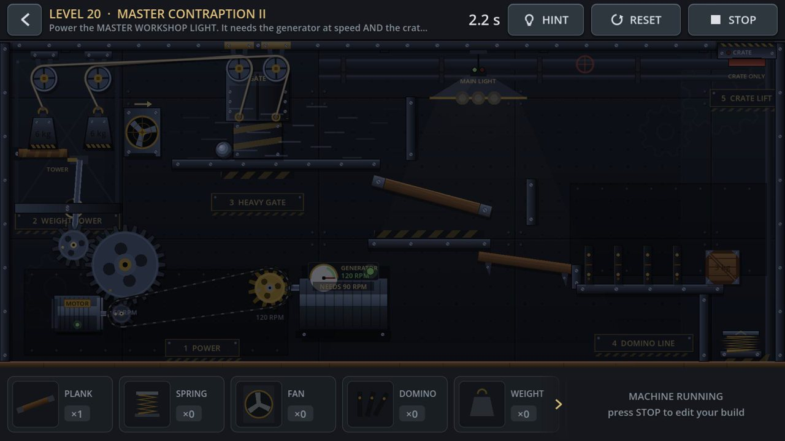
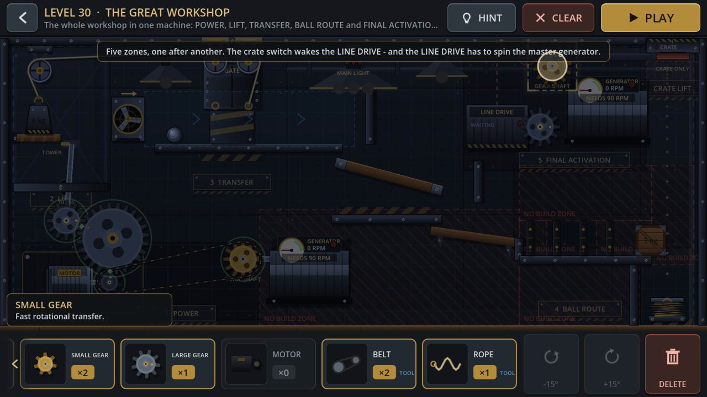
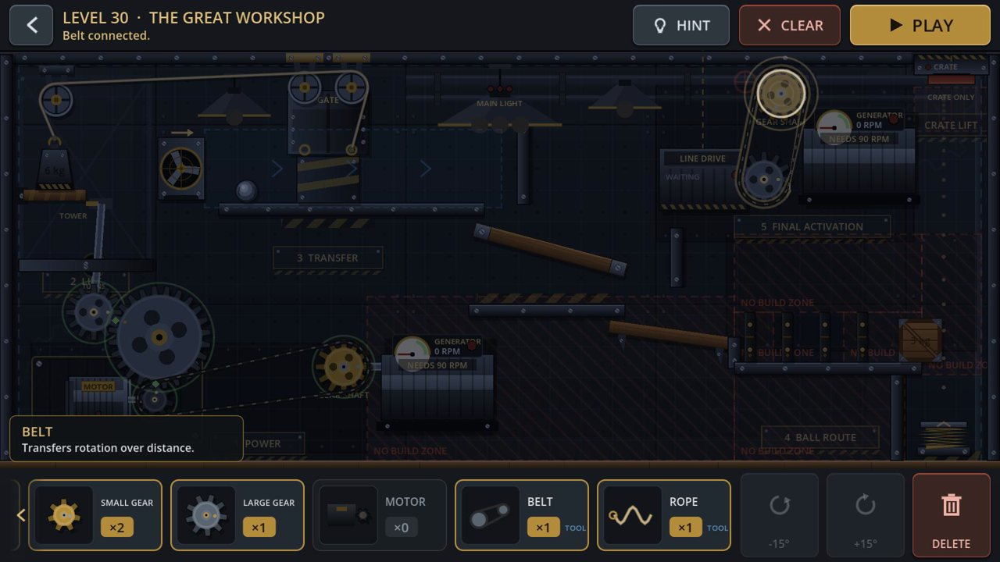
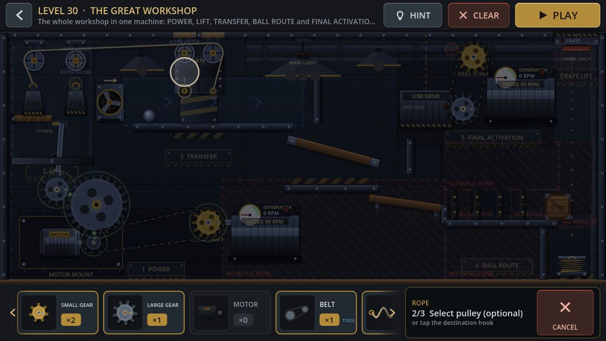
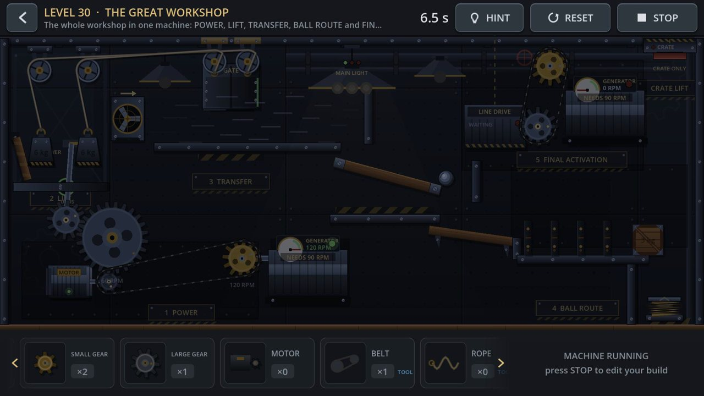
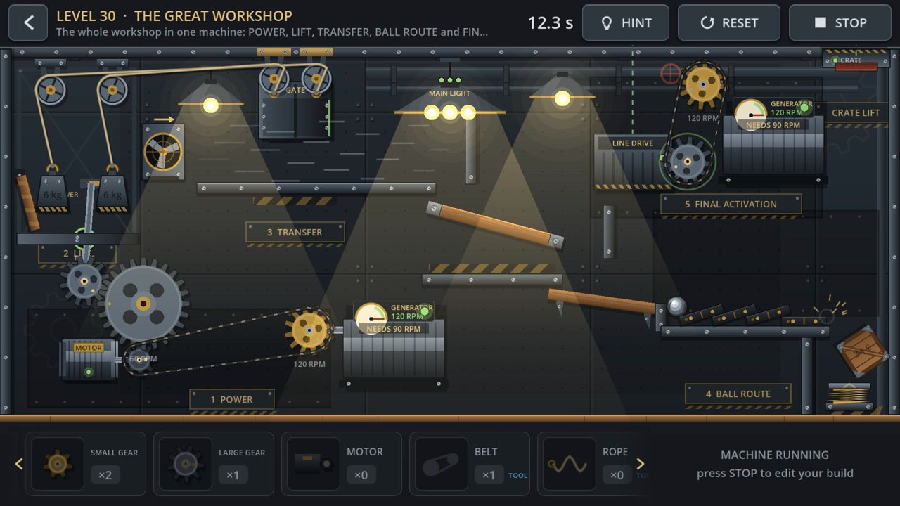
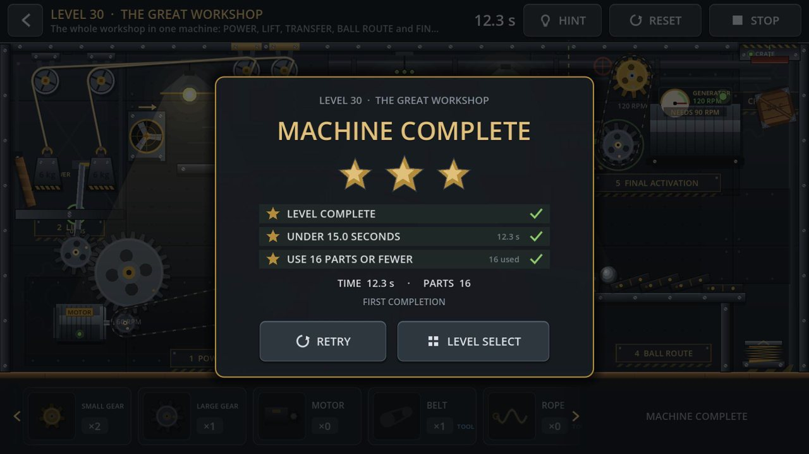
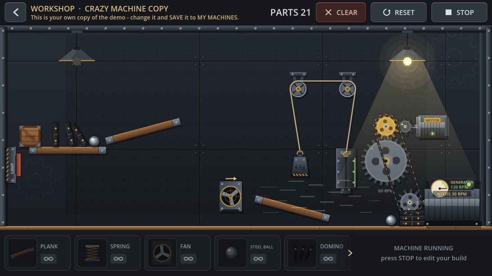
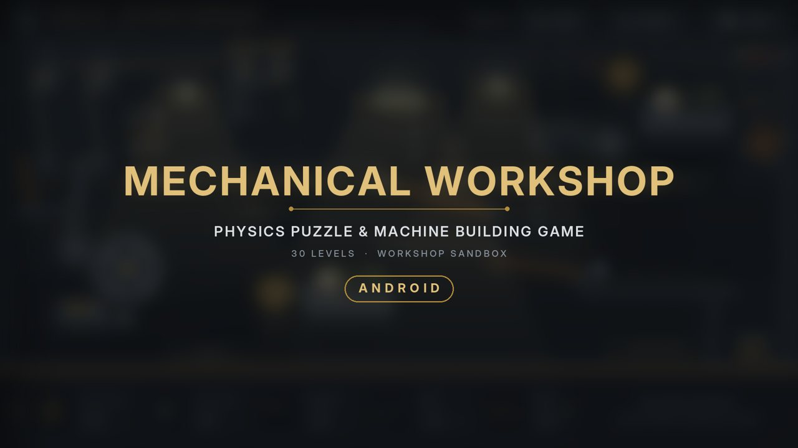

Both cuts are made from real gameplay. Godot 4.7.2 Movie Maker recorded the game frame by frame, with its own sound. The game files were not changed. A small recording script ran in a separate copy of the project and drove the game with ordinary mouse input.
Source times refer to the raw captures: l30 is Level 30, built live and then run; l20 is a Level 20 run; ws is the Workshop running a copy of the Crazy Machine demo.
| Trailer | Shot | Source | Text overlay |
|---|---|---|---|
| 0.00–1.80 | Hook. Close-up of the L20 power section, cropped and scaled 1.5×: the motor, the big gear, and the belt to the 120 RPM generator, all turning. No menus. | l20 4.0–5.8 | Can you build a machine that actually works? |
| 1.80–2.80 | A small gear is dragged out of the tray and snaps onto the master generator's gear shaft. | l30 3.4–4.4 | Build |
| 2.80–3.60 | A pulley is dropped onto the left pulley mount. | l30 8.1–8.9 | Build |
| 3.60–4.50 | BELT tool: tap the LINE DRIVE, tap the new gear, then "Belt connected."1.33× | l30 6.0–7.2 | Connect |
| 4.50–5.50 | ROPE tool: from the gate hook, over the fixed pulley and your pulley, down to the weight.2× | l30 12.6–14.6 | Connect |
| 5.50–6.20 | Tap PLAY. | l30 15.7–16.4 | Press play |
| 6.20–12.50 | The star shot. The full 12.3 s run of L30 in one uncut take. The motor drives the gears and belt; the tower hatch drops its weight; the 9 kg gate lifts; the fan pushes the ball; the ball runs down the chute into the dominoes; the crate falls onto the spring and is launched; the CRATE switch starts the LINE DRIVE, which spins the master generator.2× | l30 16.4–29.0 | Watch it work (6.7–8.5, over the tray) |
| 12.50–14.50 | Finale. The dark hall comes alive: the MAIN LIGHT turns on, then the hall lamps one after another. Real time. | l30 29.0–31.0 | none: the lamps carry it |
| 14.50–15.80 | The game's own MACHINE COMPLETE panel: 3 stars, 12.3 s, 16 parts. | l30 34.0–35.3 | none (the panel is the title) |
| 15.80–18.20 | WORKSHOP sandbox: the Crazy Machine copy runs. The ∞ tray and both lamps are on screen. | ws 2.1–4.5 | Build your own machines Workshop sandbox · every part, unlimited |
| 18.20–20.60 | End card over a blurred frame of the lit finale, with a slow 2.5 % push-in. Sound: the game's own lamp click and lamp-on. | card | Mechanical Workshop Physics Puzzle & Machine Building Game · Android |
The full 16:9 frame sits centred at 1080×608 and is never cropped. Above and below it, a blurred, darkened copy of the same shot fills the frame, edged by thin brass rules. Captions sit in the top band. The secondary line sits in the bottom band, clear of the Shorts and Reels buttons.
| Trailer | Shot | Source | Caption |
|---|---|---|---|
| 0.00–2.00 | Hook. L20 power-section close-up. | l20 4.0–6.0 | I built a machine… |
| 2.00–3.00 | Gear dragged in and snapped onto the shaft. | l30 3.4–4.4 | Build |
| 3.00–3.90 | Belt connected.1.33× | l30 6.0–7.2 | Connect |
| 3.90–4.90 | Rope routed over two pulleys.2× | l30 12.6–14.6 | Connect |
| 4.90–5.60 | Tap PLAY. | l30 15.7–16.4 | Press play |
| 5.60–11.90 | Full uncut run.2× | l30 16.4–29.0 | Level 30 · The Great Workshop bottom: 16 parts · 5 stages / one button |
| 11.90–14.40 | The lamps come on. | l30 29.0–31.5 | …and it actually worked. |
| 14.40–15.70 | MACHINE COMPLETE, 3 stars. | l30 34.0–35.3 | (caption holds) |
| 15.70–18.10 | Vertical end card. | card | Mechanical Workshop · Android |
Hook change. I split your line in two. "I built a machine…" opens the video, and "…and it actually worked." lands exactly when the lamps come on. The open sentence gives viewers a reason to stay to the end, which matters most on Shorts. A bottom-band line, "16 parts · 5 stages · one button", tells viewers what they are watching while the machine runs.









lamp_click, lamp_on and room tone. The hook adds the game's motor_start at 55 %.scripts/visual/palette.gd: BRASS_LIGHT, LAMP_ON and STEEL_DARKEST.